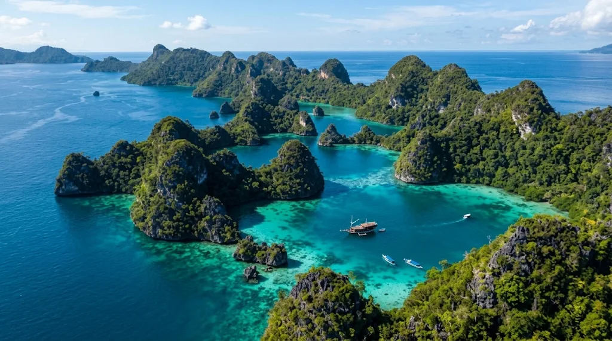

7 Hari / 6 MalamSorong • Mansuar • Piaynemo • Wayag
Raja Ampat Ultimate Island Cruise
Ekspedisi labuh jangkar di teluk terisolasi dengan akses perizinan konservasi adat terjamin dan pemanduan selam bersertifikasi PADI Master.
Mulai Rp 38.500.000 /paxTersedia ›